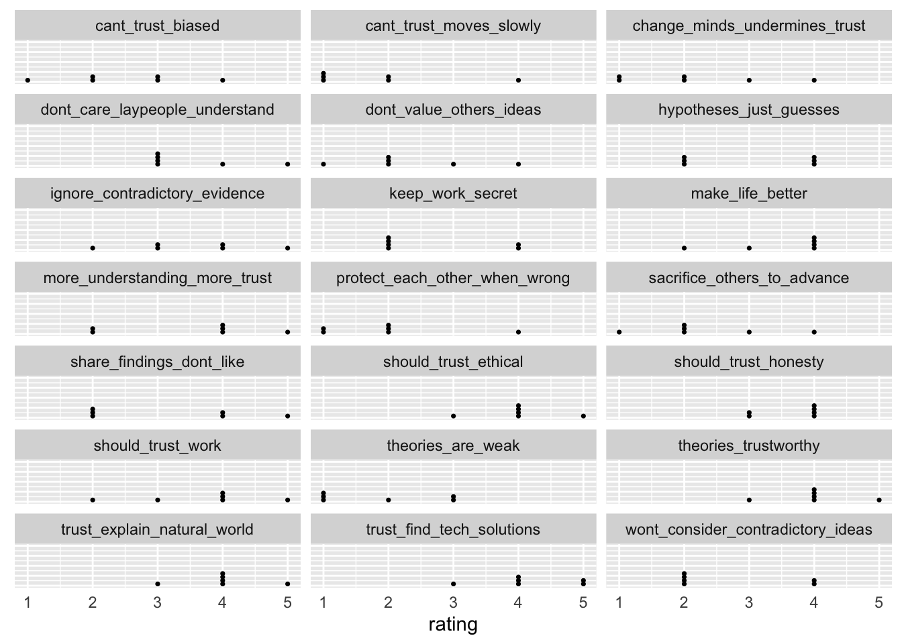

if (!dir.exists('csv')) {
message("Creating missing `csv/`.")
dir.create("csv")
}
options(gargle_oauth_email = Sys.getenv("GMAIL_SURVEY"))
googledrive::drive_auth()
googledrive::drive_download("Openness and Trust in Science (Responses)", path = "csv/survey-01-openness-trust.csv", type = "csv", overwrite = TRUE)Survey 01
Purpose
This page documents the data processing steps involved with Survey 01 in PSYCH 490.009.
The survey questions were adapted from those discussed in (Krumrei-Mancuso & Rouse, 2016; Nadelson et al., 2014; Plohl & Musil, 2023).
Survey
Preparation
First, we load the external packages (groups of R commands) that we will be using.
Gathering
Next, we download the data from the Google Sheet where it is collected. Dr. Gilmore has stored his Google account credentials in a special environment file that can be accessed by the R command Sys.getenv("GMAIL_SURVEY").
The data file has been saved as a comma-separated value (CSV) format data file in a special directory called csv/.
Note
Because these data might contain sensitive or identifiable information, we only keep a local copy and do not share it publicly via GitHub. This is achieved by adding the name of the data directory to a special .gitignore file.
Cleaning
Next we load the data file and clean it.
survey_01 <-
readr::read_csv("csv/survey-01-openness-trust.csv", show_col_types = FALSE)
# Google Forms puts the full question in the top row of the data file.
# We use the names() function to extract and print the original questions.
survey_01_qs <- names(survey_01)
survey_01_qs [1] "Timestamp"
[2] "I have at times changed opinions that were important to me, when someone showed me I was wrong."
[3] "I am willing to change my position on an important issue in the face of good reasons."
[4] "I am open to revising my important beliefs in the face of new information."
[5] "I am willing to change my opinions on the basis of compelling reason."
[6] "I’m willing to change my mind once it’s made up about an important topic."
[7] "Scientists ignore evidence that contradicts their work."
[8] "Scientific theories are weak explanations."
[9] "Scientists intentionally keep their work secret."
[10] "Scientists don't value the ideas of others."
[11] "Scientists don't care if laypersons understand their work."
[12] "We should trust the work of scientists."
[13] "We should trust that scientists are being honest in their work."
[14] "We should trust that scientists are being ethical in their work."
[15] "People who understand science more have more trust in science."
[16] "We can trust science to find the answers that explain the natural world."
[17] "We cannot trust scientists because they are biased in their perspectives."
[18] "Scientists will protect each other even when they are wrong."
[19] "We cannot trust scientists to consider ideas that contradict their own."
[20] "Today's scientists will sacrifice the well being of others to advance their research."
[21] "We cannot trust science because it moves too slowly."
[22] "When scientists change their mind about a scientific idea it diminishes my trust in their work."
[23] "We can trust scientists to share their discoveries even if they don't like their findings."
[24] "I trust that the work of scientists is to make life better for people."
[25] "Scientific theories are trustworthy."
[26] "When scientists form a hypothesis they are just guessing."
[27] "I trust scientists can find solutions to our major technological problems."
[28] "Comments" For plotting and analyses, it’s usually easier to shorten the questions by creating a short name that reflects the underlying idea or construct. We’ll use the rename() function from the dplyr package for this.
We first rename the variables from the “Openness to Revising One’s Viewpoint” subscale from the Comprehensive Intellectual Humility Scale (Krumrei-Mancuso & Rouse, 2016).
survey_01_clean <- survey_01 |>
dplyr::rename(
timestamp = "Timestamp",
when_shown_wrong = "I have at times changed opinions that were important to me, when someone showed me I was wrong.",
good_reason = "I am willing to change my position on an important issue in the face of good reasons." ,
new_info = "I am open to revising my important beliefs in the face of new information.",
compelling_reason = "I am willing to change my opinions on the basis of compelling reason.",
mind_made_up = "I’m willing to change my mind once it’s made up about an important topic.",
comments = "Comments"
)Now, we rename the variables from the (Nadelson et al., 2014) trust in science and scientists survey.
survey_01_clean <- survey_01_clean |>
dplyr::rename(
ignore_contradictory_evidence = "Scientists ignore evidence that contradicts their work.",
theories_are_weak = "Scientific theories are weak explanations.",
keep_work_secret = "Scientists intentionally keep their work secret.",
dont_value_others_ideas = "Scientists don't value the ideas of others.",
dont_care_laypeople_understand = "Scientists don't care if laypersons understand their work.",
should_trust_work = "We should trust the work of scientists.",
should_trust_honesty = "We should trust that scientists are being honest in their work.",
should_trust_ethical = "We should trust that scientists are being ethical in their work.",
more_understanding_more_trust = "People who understand science more have more trust in science.",
trust_explain_natural_world = "We can trust science to find the answers that explain the natural world.",
cant_trust_biased = "We cannot trust scientists because they are biased in their perspectives.",
protect_each_other_when_wrong = "Scientists will protect each other even when they are wrong.",
wont_consider_contradictory_ideas = "We cannot trust scientists to consider ideas that contradict their own.",
sacrifice_others_to_advance = "Today's scientists will sacrifice the well being of others to advance their research.",
cant_trust_moves_slowly = "We cannot trust science because it moves too slowly.",
change_minds_undermines_trust = "When scientists change their mind about a scientific idea it diminishes my trust in their work.",
share_findings_dont_like = "We can trust scientists to share their discoveries even if they don't like their findings.",
make_life_better = "I trust that the work of scientists is to make life better for people.",
theories_trustworthy = "Scientific theories are trustworthy.",
hypotheses_just_guesses = "When scientists form a hypothesis they are just guessing.",
trust_find_tech_solutions = "I trust scientists can find solutions to our major technological problems."
)Now, let’s look at the names to confirm they all got changed.
names(survey_01_clean) [1] "timestamp" "when_shown_wrong"
[3] "good_reason" "new_info"
[5] "compelling_reason" "mind_made_up"
[7] "ignore_contradictory_evidence" "theories_are_weak"
[9] "keep_work_secret" "dont_value_others_ideas"
[11] "dont_care_laypeople_understand" "should_trust_work"
[13] "should_trust_honesty" "should_trust_ethical"
[15] "more_understanding_more_trust" "trust_explain_natural_world"
[17] "cant_trust_biased" "protect_each_other_when_wrong"
[19] "wont_consider_contradictory_ideas" "sacrifice_others_to_advance"
[21] "cant_trust_moves_slowly" "change_minds_undermines_trust"
[23] "share_findings_dont_like" "make_life_better"
[25] "theories_trustworthy" "hypotheses_just_guesses"
[27] "trust_find_tech_solutions" "comments" Data dictionary
We’ll pause here to start building a data dictionary, a file that explains the origin, format, and usage of our dataset.
survey_01_data_dictionary <-
tibble::tibble(
question = survey_01_qs,
short_name = names(survey_01_clean),
reference = c(
NA,
rep("krumrei-mancuso-2016", 5),
rep("nadelson-2014", 21),
NA
)
)We’ll add other items to the data dictionary later.
Filtering out irrelevant responses
We should omit the first response in the dataset. That was the one Dr. Gilmore used to generate a Google Sheet, and isn’t real data.
n_responses <- dim(survey_01_clean)[1]
if (n_responses > 1) {
survey_01_clean <- survey_01_clean[2:n_responses,]
} else {
message("No 'non-test' responses yet. Leaving data file unchanged.")
}Visualizations
survey_01_clean |>
dplyr::mutate(resp_index = 1:(n_responses-1)) |>
ggplot() +
aes(x = timestamp, resp_index) +
geom_point()
Openness questions
Remember:

survey_01_clean[,2:6] |>
ggpairs()
survey_01_data_dictionary[2:6,1:2] |>
knitr::kable(format = "html") |>
kableExtra::kable_classic()| question | short_name |
|---|---|
| I have at times changed opinions that were important to me, when someone showed me I was wrong. | when_shown_wrong |
| I am willing to change my position on an important issue in the face of good reasons. | good_reason |
| I am open to revising my important beliefs in the face of new information. | new_info |
| I am willing to change my opinions on the basis of compelling reason. | compelling_reason |
| I’m willing to change my mind once it’s made up about an important topic. | mind_made_up |
Trust in science questions
Note
It would be even better to create a function that generates the plot and shows the long and short question names. Any time I repeat myself, I should remember this acronym:
Don’t Repeat Yourself
Write It Down
There are a number of these, so we break them into smaller groups for visualization.
survey_01_clean[, 7:11] |>
ggpairs()
survey_01_data_dictionary[7:11,1:2] |>
knitr::kable(format = "html") |>
kableExtra::kable_classic()| question | short_name |
|---|---|
| Scientists ignore evidence that contradicts their work. | ignore_contradictory_evidence |
| Scientific theories are weak explanations. | theories_are_weak |
| Scientists intentionally keep their work secret. | keep_work_secret |
| Scientists don’t value the ideas of others. | dont_value_others_ideas |
| Scientists don’t care if laypersons understand their work. | dont_care_laypeople_understand |

survey_01_clean[, 12:16] |>
ggpairs()Warning in cor(x, y): the standard deviation is zero
Warning in cor(x, y): the standard deviation is zero
Warning in cor(x, y): the standard deviation is zero
Warning in cor(x, y): the standard deviation is zerosurvey_01_data_dictionary[12:16,1:2] |>
knitr::kable(format = "html") |>
kableExtra::kable_classic()| question | short_name |
|---|---|
| We should trust the work of scientists. | should_trust_work |
| We should trust that scientists are being honest in their work. | should_trust_honesty |
| We should trust that scientists are being ethical in their work. | should_trust_ethical |
| People who understand science more have more trust in science. | more_understanding_more_trust |
| We can trust science to find the answers that explain the natural world. | trust_explain_natural_world |

q_range <- c(17:21)
survey_01_clean[, q_range] |>
ggpairs()
survey_01_data_dictionary[q_range,1:2] |>
knitr::kable(format = "html") |>
kableExtra::kable_classic()| question | short_name |
|---|---|
| We cannot trust scientists because they are biased in their perspectives. | cant_trust_biased |
| Scientists will protect each other even when they are wrong. | protect_each_other_when_wrong |
| We cannot trust scientists to consider ideas that contradict their own. | wont_consider_contradictory_ideas |
| Today’s scientists will sacrifice the well being of others to advance their research. | sacrifice_others_to_advance |
| We cannot trust science because it moves too slowly. | cant_trust_moves_slowly |

q_range <- c(22:27)
survey_01_clean[, q_range] |>
ggpairs()
survey_01_data_dictionary[q_range,1:2] |>
knitr::kable(format = "html") |>
kableExtra::kable_classic()| question | short_name |
|---|---|
| When scientists change their mind about a scientific idea it diminishes my trust in their work. | change_minds_undermines_trust |
| We can trust scientists to share their discoveries even if they don’t like their findings. | share_findings_dont_like |
| I trust that the work of scientists is to make life better for people. | make_life_better |
| Scientific theories are trustworthy. | theories_trustworthy |
| When scientists form a hypothesis they are just guessing. | hypotheses_just_guesses |
| I trust scientists can find solutions to our major technological problems. | trust_find_tech_solutions |

References
Krumrei-Mancuso, E. J., & Rouse, S. V. (2016). The development and validation of the comprehensive intellectual humility scale. Journal of Personality Assessment, 98(2), 209–221. https://doi.org/10.1080/00223891.2015.1068174
Nadelson, L., Jorcyk, C., Yang, D., Jarratt Smith, M., Matson, S., Cornell, K., & Husting, V. (2014). I just don’t trust them: The development and validation of an assessment instrument to measure trust in science and scientists. School Science and Mathematics, 114(2), 76–86. https://doi.org/10.1111/ssm.12051
Plohl, N., & Musil, B. (2023). Assessing the incremental value of intellectual humility and cognitive reflection in predicting trust in science. Personality and Individual Differences, 214, 112340. https://doi.org/10.1016/j.paid.2023.112340
Comments